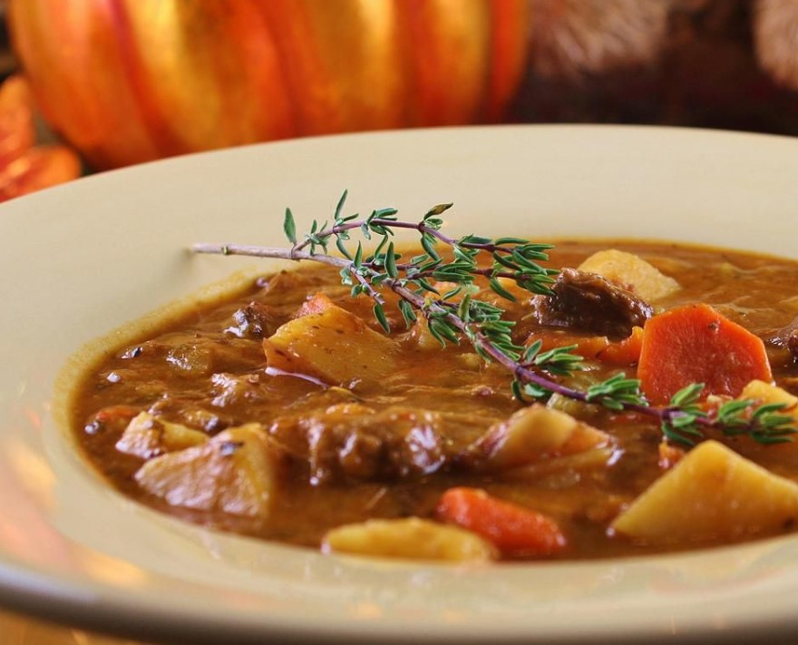

Delicious Beef Stew

Description
This hearty beef and vegetable stew that can be made in the slow-cooker is a family favorite. It is also the
backbone
for an excellent beef soup, if you actually find yourself with leftovers.
Ingredients
- Beef chunks
- Carrots
- Potatoes
- Onion
- Garlic
- Beef broth
- Tomato paste
- Bay leaves
- Thyme
- Salt and pepper
Steps
- In a large pot, brown the beef chunks over medium heat.
- Add chopped onions and garlic, sauté until softened.
- Stir in carrots, potatoes, and tomato paste.
- Pour in beef broth and add bay leaves, thyme, salt, and pepper.
- Bring to a boil, then reduce heat and simmer for 1.5 to 2 hours.
- Remove bay leaves before serving.
Enjoy your hearty beef stew!